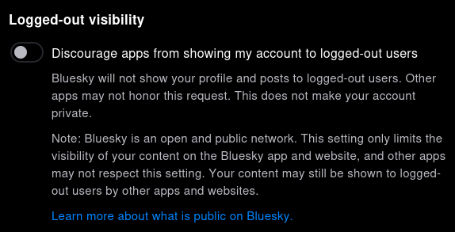

The Social Butterfly

今朝 Bluesky アプリのアイコンが蝶になってることに気がついた。 Web UI も含めてアイコンを変えたらしい。
ブランドロゴとしてはどうなるか分からないが，とりあえず絵文字の 🦋 で代替できるっぽい。
他に重要な変更といえば，ユーザのプロファイルおよび投稿がログインしなくても見れるようになった。
We built Bluesky to be a home for public conversation — breaking news, commentary and analysis, jokes and more. And we’re taking one step closer to this goal by releasing a public web view, which means that you don’t have to be logged in to view posts on Bluesky.
Starting today, you can easily view Bluesky posts without being logged in. Sharing will be more convenient — whether it’s a joke you want to text a friend, or a post you want to embed in an article.
不特定から見られたくない場合は Settings の Moderation にある “Discourage apps from showing my account to logged-out users” のスイッチをオンにすればよい（既定はオフ）。

ただし，この設定に従うかどうかはアプリ次第らしいので，公式のアプリや Web UI 以外では無視される可能性もある。 𝕏 (旧 Twitter) で言うところの鍵垢とは違うので注意が必要である。
というわけで，フッタ部に暫定で Bluesky のアイコンを追加してみた。
そうそう。招待状が余ってるので，私と直接連絡がつけれる方は言ってください。融通できます（転売禁止）。
ちなみに 𝕏 での活動は休眠中で殆どアクセスしないのであしからず。
アイコンの蝶ように蛹から羽化して青空に上手く飛び立てればいいねぇ。 個人的には「分散型 SNS」というものに対して今ひとつ懐疑的ではあるが，少なくとも 𝕏 の代替としては期待している（Mastodon は 𝕏 の代替にはなれないと思う。もっと違う何か）。
【2024-04-04 追記】 Font Awesome 6.5.2 に Social Butterfly 登場！
早速対応した。
| アイコン | コード例 |
|---|---|
<span class="fa-4x" style="color:#0C5CB0;"><i class="fa-brands fa-bluesky"></i></span> |
よーし，うむうむ，よーし。